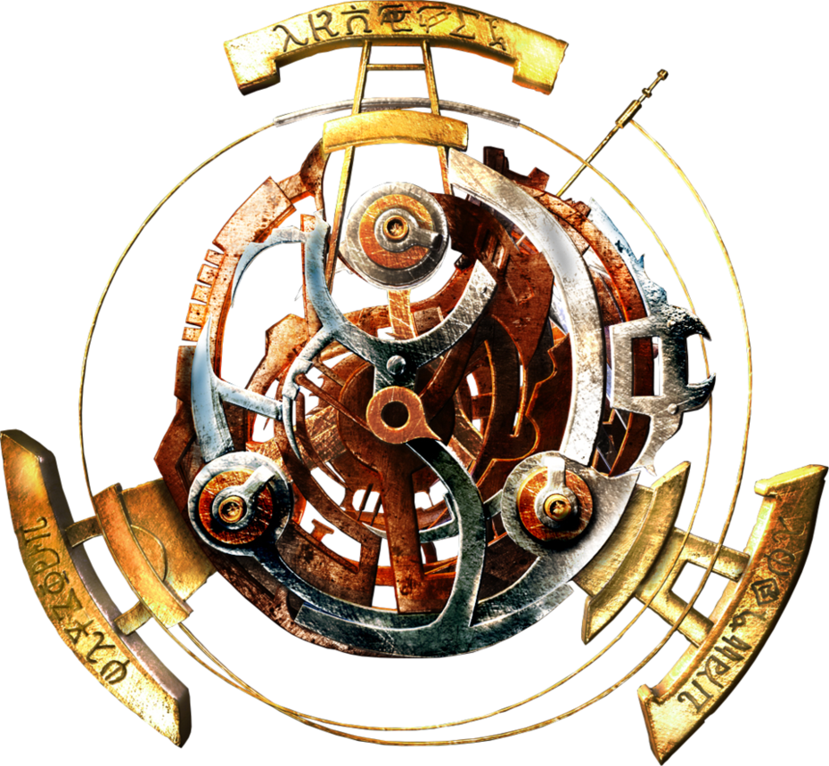

Franquia de jogos Tomb Raider
Tomb Raider é uma série de jogos eletrônicos, histórias em quadrinhos e filmes tendo como protagonista a personagem Lara Croft . Desde o lançamento do primeiro Tomb Raider, em 1996, as séries tiveram um grande lucro e Lara transformou-se num dos principais ícones da indústria de vídeo games.
O Guiness Book reconheceu Lara Croft como "a Melhor Aventureira Heroína do Mundo de vídeo game mais bem sucedida" em 2006.
Seis jogos da série foram desenvolvidos pela Core Design, e os três últimos pela Crystal Dynamics. Todos os jogos foram publicados pela Eidos Interactive, que mantém os direitos dos personagens e a marca registrada de Tomb Raider. Para o cinema, Lara Croft: Tomb Raider e Lara Croft Tomb Raider: The Cradle of Life foram produzidos, estrelando a atriz americana Angelina Jolie como Lara Croft. Todos os jogos Tomb Raider venderam mais de 89 milhões de unidades, fazendo uma das séries de video games mais vendidas de todos os tempos.
Jogos
- Tomb Raider
- Tomb Raider II
- Tomb Raider III
- Tomb Raider IV
- Tomb Raider Chronicles
Onde fica a mansão Croft?
Mais parece um museu!